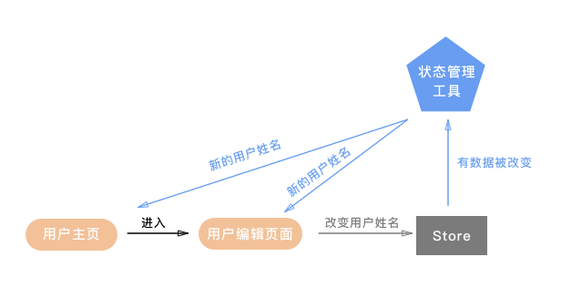
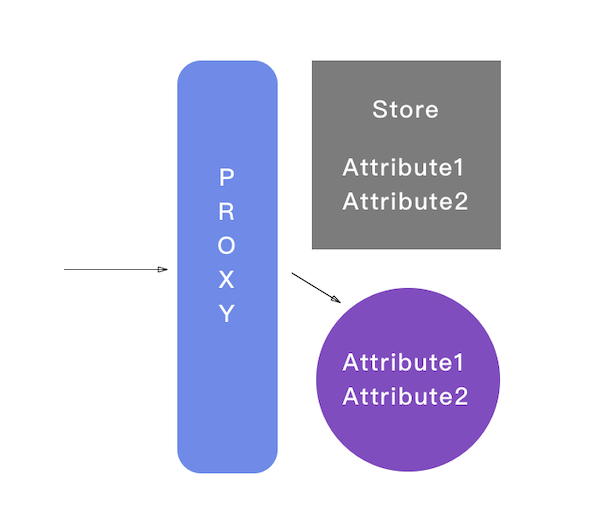

摘要： 小程序状态管理。
Fundebug经授权转载，版权归原作者所有。
微信小程序的市场在进一步的扩大，而背后的技术社区仍在摸索着最好的实践方案。我在帮助Nike，沃尔玛以及一些创业公司开发小程序后，依旧认为使用小程序原生框架是一个更高效，稳定的选择，而使用原生框架唯独缺少一个好的状态管理库，如果不引入状态管理则会让我们在模块化，项目结构以及单元测试上都有些捉襟见肘。
目前相对比较稳健的做法是针对redux或者mobx做一个adaptor应用到小程序中，但这样需要自己想办法打包引入外部库，还要想怎么去写这个adaptor，总显得有些麻烦。于是我迸发出一个想法去写一个专用于小程序的状态管理库，它使用起来足够简单并且可以通过小程序自己的npm机制安装。
目前我已经用这个开源库开发了两个电商小程序，在提高我开发效率的同时亦保证了程序的性能，所以接下来我想谈谈这背后的理念以启发更多开发者尝试新的解决方案。
Proxy在小程序中已经得到了足够好的支持，目前并没有发现在任何iPhone或者Android上不能使用Proxy的情况。而基于Proxy的状态管理其实也就是订阅监听的模式，一方面监听数据的变化，另一方面将这些变化传达给订阅的小程序页面。
举一个比较常见的例子，当一个用户从自己的主页进入用户编辑页面，然后更改了自己的用户名点击保存后，用户主页和用户编辑页上的用户名这时候都应该被更新。这背后的程序逻辑则是：更新这个行为将触发Proxy去通知状态管理库，然后状态管理库负责检查此时还在页面栈中的所有页面，更新订阅了用户名这个数据的页面，如下图：

监听数据变化其实就是监听各个Store的属性变化，实现上就是在各个Store前面加了一层Proxy，用更直观的图片来表示就是这样：

当一个Store被观察以后，它的属性就都变成了Proxy实例，当这个属性值是Object或者Array的时候，它内部的值也会被包装成Proxy实例，这样无论多深层的数据变动都能被监听到。
而在Proxy的后面，Store的属性其实是被另一套数据(紫色部分)所维护，这套数据不负责监听，它就是纯数据，针对属性的任何变动最后都会应用到这套数据上来，它的作用是维护和返回最新的数据。
实现细节： https://github.com/wwayne/min...
因为小程序每个页面的js都是向Page中传递一个对象，这就让我们有机会包装这个对象，从而实现：
实现细节： https://github.com/wwayne/min...
当数据被监听到变化后，我们需要依次做两件事，先是找到所有存储在页面栈里的页面，然后根据各个页面订阅的数据来检查变化，如果有变化就通知这些页面，从而让它们去触发setData更新页面。
实现细节：https://github.com/wwayne/min...
有了状态管理库，现在我们就来实现一开始举例的更新用户信息的操作，我们的文件路径如下：
stores/
user.js
pages/
userEdit/
index.js
index.wxml1. 首先我们创建一个Store保存用户的信息，并且监听它的变化：
// stores/user.js
import { observe } from 'minii'
Class UserStore {
constructor () {
this.name = 'bob'
}
changeName (name) {
this.name = name
}
}
export default observe(new UserStore(), 'user')2. 接着在我们的小程序页面订阅Store的信息
// pages/userEdit/index.js
import { mapToData } from 'minii'
import userStore from '../../stores/user'
const connect = mapToData(state => (({
myName: state.user.name
}))
Page(connect({
updateNameToJames () {
userStore. changeName('james')
}
}))3. 完成，现在可以在页面中使用和更新数据了
// pages/userEdit/index.wxml
<text>{{ myName }}</text>
<button bindtap="updateNameToJames">update name to James</button>小程序因为有体积的限制，所以我希望在代码量上也尽量做到轻量和便捷，所以目前这个状态管理库并没有太多很复杂的功能，在小程序打包后所占用的体积也不到1kb，颇有点够用就好的意思。
我也已经用它开发了两款小程序，在经历了一段时间的用户使用后，我也更有信心说这个方案在小程序中是可行的。如果你有任何想法和建议，都欢迎告诉我。
项目Github: https://github.com/wwayne/minii
Hi, 我是wwayne，是一名居住在上海的独立软件工程师，我正在开发我的新产品 talk-to-kim, 你可以在Github 或者专栏 一个人写代码找到我
Fundebug专注于JavaScript、微信小程序、微信小游戏、支付宝小程序、React Native、Node.js和Java线上应用实时BUG监控。 自从2016年双十一正式上线，Fundebug累计处理了10亿+错误事件，付费客户有阳光保险、荔枝FM、掌门1对1、核桃编程、微脉、青团社等众多品牌企业。欢迎免费试用！